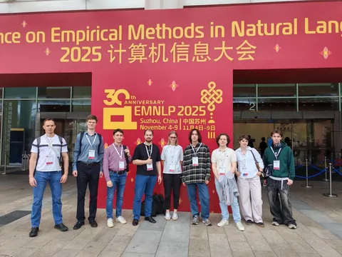

Продолжаем делиться новостями о ежегодной конференции Empirical Methods in Natural Language Processing. В Душном NLP рассказываем о статьях, которые запомнились коллегам. А здесь поговорим о работах, которые они привезли в Китай.
В этом году на конференцию приняли сразу две статьи из Яндекса. Обе — от команды машинного перевода.
1. Refined Assessment for Translation Evaluation: Rethinking Machine Translation Evaluation in the Era of Human-Level Systems
Соавторы исследования — ребята из Together AI.
Работа посвящена проблеме оценки качества машинного перевода. Несмотря на впечатляющий прогресс LLM, задача перевода ещё далека от того, чтобы считаться решённой: современные системы хорошо справляются с новостными и бытовыми текстами, но далеко не всегда — с переводом научных статей или художественной литературы.
Мы собрали новую экспертную разметку англо-русских переводов с WMT24 и показали, что проблема заключается не только в протоколах оценки, но и в низком качестве крауд-разметки. Наши эксперты — профессиональные лингвисты и переводчики — находят в среднем в семь раз больше ошибок (4,66 против 0,65 на сегмент), чем асессоры в официальной разметке WMT24.
Также мы предложили протокол RATE (Refined Assessment for Translation Evaluation), который объединяет выделение ошибок с оценкой по 100-балльной шкале ключевых характеристик перевода — точности сохранения смысла (accuracy) и естественности/читаемости текста (fluency). RATE использует упрощённую категоризацию ошибок и расширенную шкалу их критичности, что делает анализ систем более информативным, при этом результаты разметки можно конвертировать для сравнения с существующими стандартами MQM и ESA.
Результаты показывают, что современные модели действительно превосходят человека по точности передачи смысла, но заметно уступают в естественности и читаемости текста. При этом по нашей разметке системы разделяются статистически значимо, в отличие от официальных оценок WMT24, где большинство моделей оказывается в одном кластере. Более того, становится очевидно, что без экспертной разметки и продуманных протоколов невозможно развивать качество перевода: по формальным метрикам WMT24 можно сделать вывод, что задача перевода решена, однако наши данные показывают, что это далеко от реальности — количество ошибок на сегмент остаётся высоким даже у лучших систем.
2. Yandex Submission to the WMT25 General Translation Task
В этой работе описывается участие Яндекса в ежегодном соревновании по качеству перевода в рамках конференции WMT.
Мы работаем с направлением перевода с английского на русский, используя специализированную модель, построенную с помощью дообучения pretrain-версии YandexGPT. Процесс обучения состоит из нескольких стадий.
Сначала мы делаем дополнительное предобучение для адаптации к многоязычности и переводу (post-pretrain). Затем — стандартное обучение с учителем (SFT) на корпусе параллельных документов с использованием P-Tuning. Далее — применяем новую схему алайнмента в два этапа:🔴 обучение по методике curriculum learning с расписанием сложности,🔴 исправление ошибок модели с использованием в качестве положительных примеров постредактированных человеком текстов (активное обучение) и адаптация под универсальный формат тегов.
Об исследованиях рассказали их авторы Дмитрий Попов и Николай Карпачёв
